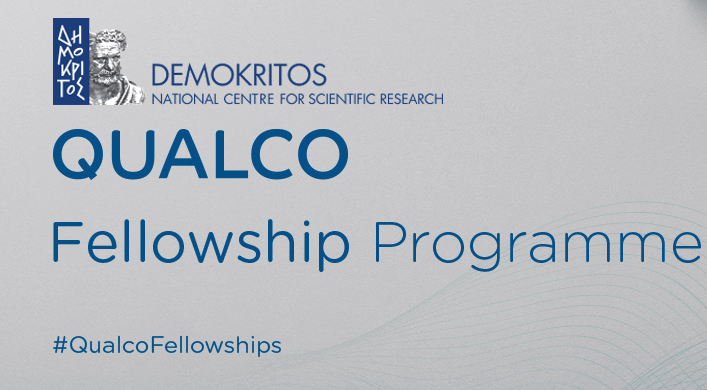
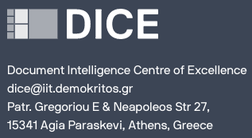
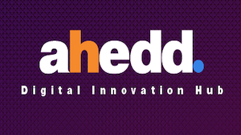

Ilias Zavitsanos was born in Athens, Greece and he graduated from the National and Kapodistrian University of Athens, Department of Informatics and Telecommunications, having focused his research interests in the domain of intelligent web services. Afterward, he joined the Department of Information and Communication Systems Engineering at the University of Aegean, where he completed his PhD on Ontology Learning and Evaluation from Texts. The research was conducted within the Software and Knowledge Engineering Laboratory of NCSR Demokritos, in collaboration with the University of Aegean. He then worked as a research fellow for the Software and Knowledge Engineering Lab at the Institute of Informatics and Telecommunications of NCSR Demokritos in Athens, Greece, as well as for the Department of Information and Communication Systems Engineers at the University of the Aegean. Finally, he has also worked in the industry as a software engineer and data scientist, building business analytics tools, prediction, and machine learning models.
He is a member of the Hellenic Artificial Intelligence Society and his research interests include machine learning, deep learning, topic models, text mining and information retrieval. He enjoys programming in Python and Javascript.
ORCID: 000-0002-2417-3307
Current collaborations & projects

The goal of this program is to allow young researchers, graduates and students explore research directions and develop cutting-edge technological solutions that address business needs in the Fintech domain, using AI.

DICE is an AI centre of excellence focusing on document intelligence. Its mission is to develop novel AI methods and become a world class reference centre in AI for business documents.
The CNA group aims to bring together scientists that want to share research ideas, experimental results, expertise, and knowledge around the area of Complex Networks, probabilistic graphs, and related research topics.

ahedd is an ecosystem of research & corporate entities that have exceptional know-how in offering digital transformation & innovation solutions using Artificial Intelligence, Big Data and Internet of Things technologies as horizontal enablers.
{kind=link}
{kind=link}
{kind=link}
{kind=link}